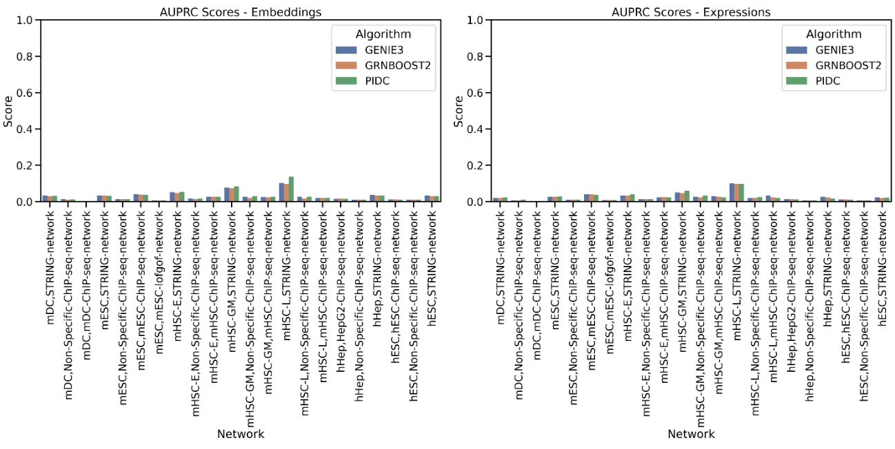
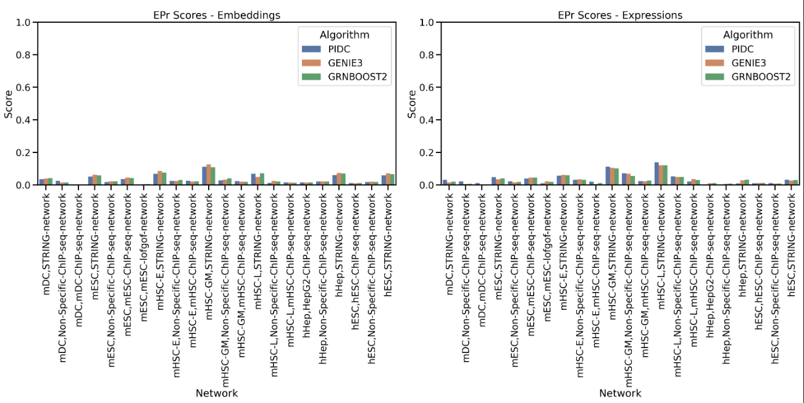

The primary goal of this project was to establish a framework for evaluating the performance of foundation models, specifically scGPT, in generating embeddings suitable for gene regulatory network (GRN) inference. By leveraging the BEELINE benchmark, we aimed to create a standardized approach for assessing the effectiveness of current and future foundational models in the context of GRN inference.
All the goals mentioned in the project have been achieved. scGPT, a transformer-based foundation model trained on single-cell RNA sequencing data enhances understanding of cellular biology and improve scRNA-seq analysis. scGPT is trained on a large corpus of scRNA-seq from CELLxGENE collection. The exact size of the pre-training dataset is around 33 million cells as explicitly mentioned in the current research. From which 97% was used for training and 3% for testing.
--use_embeddingsResults showed that gene regulatory networks (GRNs) inferred using embeddings generated by scGPT consistently outperformed those derived from raw gene expression data. This trend was observed across multiple datasets, including human and mouse single-cell RNA sequencing data from various cell types. The improved performance was evident across different GRN inference algorithms and when compared against multiple types of ground truth networks. These findings suggest that single-cell foundation models can generate embeddings that enhance the accuracy of GRN inference methods.
Fig 1: Performance of three GRN inference models, namely, GENIE3, GRNBOOST2, PIDC using sc-GPT generated embedding and gene expression data seperately. Here, along x-axis we have the gene expression dataset and the reference network and along y-axis we have the corresponding AUROC score.
Fig 2: Performance of three GRN inference models, namely, GENIE3, GRNBOOST2, PIDC using sc-GPT generated embedding and gene expression data seperately. Here, along x-axis we have the gene expression datasets and the reference network and along y-axis we have the corresponding AUPRC score.
Fig 3: Performance of three GRN inference models, namely, GENIE3, GRNBOOST2, PIDC using sc-GPT generated embedding and gene expression data seperately. Here, along x-axis we have the gene expression dataset and the reference network and along y-axis we have the corresponding Early Precision Recall score.
While significant progress has been made, there are several areas for progress that still need work:
--use_embeddings can generate and save EPr scores without the need of config file editing.The code merged is as follows, firstly some changes were made to the BLRunner.py script in order to incorporate the –use_embeddings flag, so that when the following command is used:
python BLRunner.py –config config-files/config.yaml –use_embeddingsThe change made in this file was:
parser.add_argument('--use_embeddings', action='store_true',
help='Use embeddings for expression data')for idx in range(len(evaluation.runners)):
evaluation.runners[idx].use_embeddings = opts.use_embeddingsFollowing this, some additions were made in the runner.py file in the BLRun class:
self.use_embeddings = params.get('use_embeddings', False)
self.embeddings_file = Nonedef generate_embeddings(self):
embed_script_path = Path(__file__).resolve().parent / "generate_embeds.py"
if not embed_script_path.exists():
raise FileNotFoundError(f"Embeddings script not found at {embed_script_path}")
expr_filename = Path(self.exprData).stem
new_input_dir = Path(self.inputDir) / f"processed_{expr_filename}"
new_input_dir.mkdir(parents=True, exist_ok=True)
self.embeddings_file = new_input_dir / "EmbeddingsData.csv"
print(f"Using input file: {self.exprData}")
print(f"Running embedding generation script at: {embed_script_path}")
print(f"Embeddings will be saved to: {self.embeddings_file}")
command = [
"python",
str(embed_script_path),
"--input", str(Path(self.inputDir) / self.exprData),
]
try:
subprocess.run(command, check=True, stdout=subprocess.PIPE, stderr=subprocess.PIPE)
print("Embeddings generated successfully.")
generated_file = Path(self.inputDir) / "EmbeddingsData.csv"
if generated_file.exists():
shutil.move(str(generated_file), str(self.embeddings_file))
print(f"Embeddings moved to {self.embeddings_file}")
ref_network_file = Path(self.inputDir) / "refNetwork.csv"
if ref_network_file.exists():
shutil.copy(str(ref_network_file), str(new_input_dir))
print(f"refNetwork.csv copied to {new_input_dir}")
else:
print("refNetwork.csv not found in the input directory.")
self.inputDir = new_input_dir
self.exprData = "EmbeddingsData.csv"
except subprocess.CalledProcessError as e:
print(f"Error generating embeddings: {e}")
print(f"Script output: {e.output.decode()}")
print(f"Script error: {e.stderr.decode()}")
raiseThis will ensure that the generate_embeds.py script is called within the same BLRun class if the flag is used, and the right input and output directories are passed on. The generate_embeds.py file is another addition I have made entirely:
import subprocess
import os
import argparse
def generate_embeddings(input_file):
input_dir = os.path.dirname(os.path.abspath(input_file))
print("------>", input_dir)
input_filename = os.path.basename(input_file)
output_file = os.path.join(input_dir, "EmbeddingsData.csv")
cmd = [
"docker", "run", "--rm",
"-v", f"{input_dir}:/input",
"scgpt_human",
"--input", f"/input/{input_filename}",
"--model_dir", "/app"
]
try:
subprocess.run(cmd, check=True)
print(f"Embeddings generated successfully. Output saved to {output_file}")
except subprocess.CalledProcessError as e:
print(f"Error generating embeddings: {e}")
raise
def main():
parser = argparse.ArgumentParser(description='Generate gene embeddings using scGPT model')
parser.add_argument('--input', required=True, help='Path to input expression data CSV file')
args = parser.parse_args()
generate_embeddings(args.input)
if __name__ == "__main__":
main()The pipeline automatically generates embeddings and uses them for GRN Inference. The whole pipeline here uses a generate_embeddings.py and model files located in another addition made here in a directory named Model. The model files and generate_embeddings script have been entirely dockerized.
generate_embeddings.py script:
import pandas as pd
import json
import warnings
import torch
from scgpt.tokenizer.gene_tokenizer import GeneVocab
from scgpt.model import TransformerModel
from scgpt.utils import set_seed
import os
import argparse
warnings.filterwarnings('ignore')
set_seed(42)
def initialize_model(args_file, model_file, vocab_file):
if not all(os.path.exists(f) for f in [args_file, model_file, vocab_file]):
raise FileNotFoundError(f"Required model files not found: {args_file, model_file, vocab_file}")
vocab = GeneVocab.from_file(vocab_file)
special_tokens = ["", "", ""]
for s in special_tokens:
if s not in vocab, vocab.append_token(s)
with open(args_file, "r") as f:
model_configs = json.load(f)
ntokens = len(vocab)
model = TransformerModel(
ntokens,
model_configs["embsize"],
model_configs["nheads"],
model_configs["d_hid"],
model_configs["nlayers"],
vocab=vocab,
pad_value=model_configs.get("pad_value", -2),
n_input_bins=model_configs.get("n_bins", 51),
)
device = torch.device("cuda" if torch.cuda.is_available() else "cpu")
state_dict = torch.load(model_file, map_location=device)
model.load_state_dict(state_dict, strict=False)
model.to(device)
model.eval()
return model, vocab, device
def generate_and_save_embeddings(file_path, model, vocab, device, output_file):
expression_data = pd.read_csv(file_path, index_col=0)
gene_names = expression_data.index.tolist()
tokenized_genes = []
for gene in gene_names:
upper_gene = gene.upper()
if upper_gene in vocab:
tokenized_genes.append(vocab[upper_gene])
else:
tokenized_genes.append(vocab[""]) # Use token for unknown genes
gene_ids = torch.tensor(tokenized_genes, dtype=torch.long).to(device)
with torch.no_grad():
gene_embeddings = model.encoder(gene_ids)
gene_embeddings = gene_embeddings.detach().cpu().numpy()
gene_embeddings_dict = {gene: gene_embeddings[i] for i, gene in enumerate(gene_names)}
embeddings_df = pd.DataFrame(gene_embeddings_dict).T
embeddings_df.to_csv(output_file)
print(f'Saved gene embeddings for {len(gene_embeddings_dict)} genes to {output_file}')
if __name__ == "__main__":
parser = argparse.ArgumentParser(description='Generate gene embeddings')
parser.add_argument('--input', required=True, help='Path to input expression data CSV file')
parser.add_argument('--model_dir', default='/app', help='Directory containing model files')
args = parser.parse_args()
# Generate output path based on input path
input_dir = os.path.dirname(args.input)
input_filename = os.path.basename(args.input)
output_filename = "EmbeddingsData.csv"
output_path = os.path.join(input_dir, output_filename)
print("Debug Information:")
print(f"Input file path: {args.input}")
print(f"Output file path: {output_path}")
print(f"Model directory: {args.model_dir}")
args_file = os.path.join(args.model_dir, "args.json")
model_file = os.path.join(args.model_dir, "best_model.pt")
vocab_file = os.path.join(args.model_dir, "vocab.json")
try:
model, vocab, device = initialize_model(args_file, model_file, vocab_file)
generate_and_save_embeddings(args.input, model, vocab, device, output_path)
except FileNotFoundError as e:
print(f"Error: {e}")
print("Please ensure that the model files (args.json, best_model.pt, vocab.json) are in the correct directory.")
print(f"Current model directory: {args.model_dir}")
exit(1) To follow along with the changes made in the BLRun package, some changes were also required in BLEval package to ensure automated and smooth performance of the entire Evaluation pipeline for both Expression and Embedding Data. To start off, the firstly changes were required in the __init__.py file this time, since there was no isolated runner.py file that ran all the rest of the evaluators.
self.use_embeddings = use_embeddings
if use_embeddings:
self.adjust_paths_for_embeddings()
def adjust_paths_for_embeddings(self):
for dataset in self.datasets:
processed_path = 'processed_ExpressionData'
dataset['exprData'] = str(Path(processed_path) / 'EmbeddingsData.csv')
dataset['refNetwork'] = str(Path(processed_path) / 'refNetwork.csv')
def get_true_edges_path(self, dataset_name):
dataset = next((d for d in self.datasets if d['name'] == dataset_name), None)
if dataset is None:
raise ValueError(f"Dataset with name {dataset_name} not found in datasets list.")
return self.datadir / dataset_name / 'processed_ExpressionData' / dataset['trueEdges']
if use_embeddings:
self.adjust_paths_for_embeddings()
def adjust_paths_for_embeddings(self):
self.base_dir = self.base_dir / 'processed_ExpressionData'
def get_output_path(self, dataset_name, file_name):
dataset = next((d for d in self.datasets if d['name'] == dataset_name), None)
if dataset is None:
raise ValueError(f"Dataset with name {dataset_name} not found in datasets list.")
# Construct the output path based on the required structure
output_path = self.base_dir / dataset_name / 'processed_ExpressionData' / f"{dataset_name}-{file_name}"
return output_path
Similarly more such path changes were added in the config parse(),__parse_input_settings(),--parse_output_settings(), in the ConfigParser() class to use this path by calling on the InputSettings() class.
--use_embeddings flag is used, in which a different input and output path needs to be followed:
if inputSettings.use_embeddings == True:
true_edges_path = inputSettings.get_true_edges_path(dataDict['name'])
trueEdgesDF = pd.read_csv(true_edges_path, sep=',', header=0, index_col=None)
outDir = Path("outputs") / inputSettings.datadir.relative_to("inputs") / dataDict['name'] / 'processed_ExpressionData'
else:
trueEdgesDF = pd.read_csv(str(inputSettings.datadir)+'/'+ dataDict['name'] +
'/' +dataDict['trueEdges'],
sep = ',',
header = 0, index_col = None)
outDir = Path("outputs") / inputSettings.datadir.relative_to("inputs") / dataDict['name']
Finally, the main file we run in the evaluation pipeline is the BLEvaluator.py some changes introduced here ensured that the --use_embeddings flag is parsed and the changes we added earlier ensure the pipeline runs smoothly in both cases:
parser.add_argument('--use_embeddings', action="store_true", default=False,
help="Use processed expression data embeddings for evaluation.")
if opts.auc:
print('\n\nComputing areas under ROC and PR curves...')
AUPRC, AUROC = evalSummarizer.computeAUC()
# Construct the output directory based on InputSettings
# This ensures that the path mirrors the structure used in InputSettings
dataset_name = str(evalSummarizer.output_settings.output_prefix) # Assuming this holds the dataset name, e.g., 'GSD'
if opts.use_embeddings:
# Use the processed path if embeddings are used
outDir = Path("outputs") / evalSummarizer.input_settings.datadir.relative_to("inputs") / dataset_name / "processed_ExpressionData"
# Ensure that outDir exists
outDir.mkdir(parents=True, exist_ok=True)
else:
# Use the regular path structure
outDir = Path("outputs") / evalSummarizer.input_settings.datadir.relative_to("inputs") / dataset_name
# Ensure that outDir exists
outDir.mkdir(parents=True, exist_ok=True)
# Save the output files in the correct directory
AUPRC.to_csv(outDir / "AUPRC.csv")
AUROC.to_csv(outDir / "AUROC.csv")
Another additional change, that I will pass on as a solution to this issue, as a part of the original PR. It was essential to fast pace the evaluation pipeline, due to the large size of datasets(>1000 Genes) with a small change in the computeScores() function in the computeDGAUC.py file in the BLEval folder.
# Get unique genes
unique_genes = np.unique(trueEdgesDF.loc[:, ['Gene1', 'Gene2']])
# Convert DataFrames to dictionaries for faster lookup
true_edges = set(map(tuple, trueEdgesDF[['Gene1', 'Gene2']].values))
pred_edges = dict(zip(map(tuple, predEdgeDF[['Gene1', 'Gene2']].values),
predEdgeDF['EdgeWeight']))
TrueEdgeDict = {}
PredEdgeDict = {}
if directed:
edge_generator = product(unique_genes, repeat=2) if selfEdges else permutations(unique_genes, r=2)
else:
edge_generator = combinations_with_replacement(unique_genes, r=2) if selfEdges else combinations(unique_genes, r=2)
for edge in edge_generator:
key = '|'.join(edge)
# Compute TrueEdgeDict
TrueEdgeDict[key] = int(edge in true_edges or (not directed and edge[::-1] in true_edges))
# Compute PredEdgeDict
if directed:
PredEdgeDict[key] = abs(pred_edges.get(edge, 0))
else:
PredEdgeDict[key] = max(abs(pred_edges.get(edge, 0)), abs(pred_edges.get(edge[::-1], 0)))The computeScores function has been optimized for improved performance and efficiency. Key enhancements include: